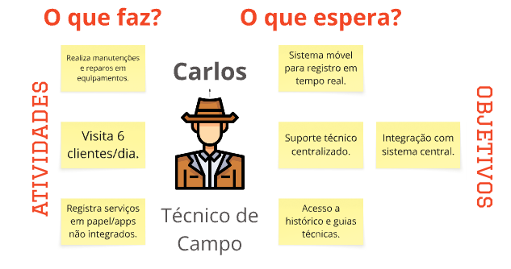
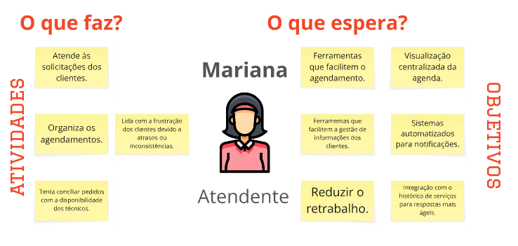
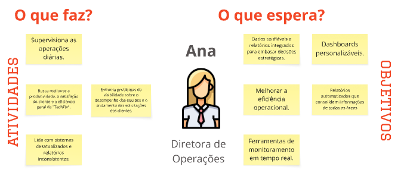
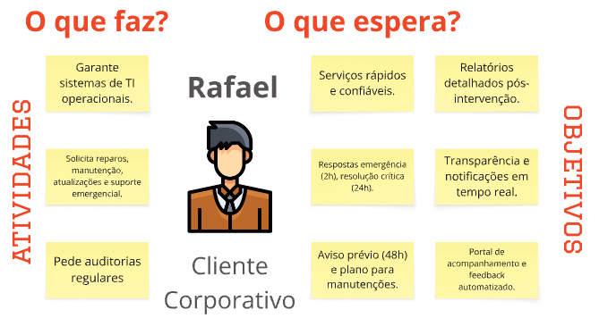

PBB
Contexto TechFix
A TechFix é uma empresa consolidada que oferece suporte técnico e manutenção de equipamentos para clientes corporativos e residenciais. Apesar de sua experiência, a empresa enfrenta problemas operacionais que ameaçam sua eficiência e reputação, como atrasos nos atendimentos, falta de previsibilidade e falhas de comunicação que resultam em agendamentos duplicados ou cancelamentos.
Desafios
O estudo de caso aponta desafios significativos que a TechFix pretende superar:
-
Comunicação e Agendamento: Os clientes recebem informações conflitantes sobre a disponibilidade dos técnicos, e a falta de um sistema integrado causa conflitos de agenda e atrasos. Clientes corporativos enfrentam demoras na entrega de peças e dificuldades no rastreamento de suas solicitações.
-
Processos Internos e Padronização: Os técnicos não possuem ferramentas adequadas para registrar os serviços, utilizando anotações manuais que levam à perda de dados críticos e à fragmentação do histórico de atendimentos. A digitação posterior desses registros gera retrabalho e risco de erros.
-
Coleta e Análise de Feedback: A coleta de feedback dos clientes é ineficaz, realizada por meio de questionários manuais com baixa taxa de resposta, o que dificulta a implementação de melhorias.
-
Gestão e Visibilidade Operacional: A falta de integração entre os sistemas internos gera retrabalho e relatórios inconsistentes, dificultando o monitoramento do desempenho da equipe e a tomada de decisões estratégicas pelos gestores.
Soluções
A solução para a TechFix foi concebida considerando as necessidades e expectativas de diferentes personas:
-
Para Carlos, o Técnico de Campo: A solução deve incluir um sistema móvel para registrar serviços em tempo real, com acesso ao histórico detalhado dos equipamentos e guias técnicos para agilizar o diagnóstico e evitar redundâncias.
-
Para Mariana, a Atendente: A plataforma deve oferecer ferramentas para facilitar o agendamento, com uma visualização centralizada da agenda e sistemas automatizados para notificações, a fim de reduzir o retrabalho e melhorar a comunicação com o cliente.
-
Para Rafael, o Cliente Corporativo: A proposta inclui um portal para acompanhamento das solicitações em tempo real, com notificações automáticas e relatórios detalhados sobre as intervenções, garantindo agilidade e transparência.
-
Para Ana, a Diretora de Operações: A solução precisa fornecer dados confiáveis por meio de dashboards personalizáveis e relatórios automatizados para monitorar o desempenho em tempo real e embasar decisões estratégicas.
Descrição PBB
Persona 01: Técnico de Campo

O que faz? (Atividades)
- Realiza manutenções e reparos em equipamentos
- Visita 6 clientes por dia
- Registra serviços em papel/apps não integrados
O que espera? (Objetivos)
- Sistema movel para registro em tempo real
- Acesso a histórico e guias técnicas
- Suporte técnico centralizado
- Integração com o sistema central
Persona 02: Atendente

O que faz? (Atividades)
- Atende às solicitações dos clientes
- Organiza atendimentos
- Tenta conciliar com a disponibilidade dos técnicos
- **Lida com frustração dos clientes devido a atrasos/inconsistências **
O que espera? (Objetivos)
- Ferramentas que facilitem o agendamento
- Visualização centralizada da agenda
- Ferramentas que facilitem a gestão de informações dos clientes
- Sisitemas automatizados para notificações
- Reduzir trabalho
- **Integração com o histórico de serciços para respostas ágeis **
Persona 03: Diretora de operações

O que faz? (Atividades)
- Supervisiona as operações diárias
- Busca melhorar a produtividade, satisfação do cliente e a eficiência geral
- Lida com sistemas desatualizados e relatórios inconsistentes
- Enfrenta problemas de visibilidade sobre o desempenho das equipes e o andamento das solicitações dos clientes
O que espera? (Objetivos)
- Dados confiaveis e relatótios intergrados para embasar decisões estratégicas
- Dashboards personalizáveis
- Melhorar eficiência operacional
- Ferramentas de monitoramento em tempo real
- **Relatórios automatizados que consolidam informações de todas as áreas **
Persona 04: Cliente corporativo

O que faz? (Atividades)
- Garante sistemas de TI operacionais
- Solicita reparos, manutenção, atualizações e suporte emergencial
- Pede auditorias regulares
O que espera? (Objetivos)
- Serviços ráoidos e confiáveis
- Relatórios detalhados pós-intervenção
- Respostas de emergências (2h) , resolução crítica (24h)
- Aviso prévio (48h) e plano para manutenções
- **Portal de acompanhamento e feedback automatizado **
- **Transparência e notficações em tempo real **
Cenários de BDD
Visualizar a disponibilidade em tempo real dos técnicos no sistema de agendamento
História de usuário:
"Como um Atendente, eu quero visualizar em tempo real a disponibilidade dos técnicos, para agendar serviços de forma eficiente."
Cenário 01: Atendente visualiza disponibilidade para novo agendamento
Dado que sou um atendente e estou logado no sistema de agendamento.
E existem técnicos com diferentes especialidades e agendas no sistema.
Quando eu busco por um técnico para um novo serviço específico (data, hora, especialidade).
Então devo visualizar a disponibilidade dos técnicos em tempo real.
E devo conseguir selecionar um horário disponível para o agendamento.
Cenário 02: Atendente visualiza indisponibilidade de técnico
Dado que sou um atendente e estou logado no sistema de agendamento.
E um técnico específico está marcado como indisponível em um determinado período.
Quando eu busco por esse técnico para um agendamento nesse período.
Então o sistema deve me informar que o técnico está indisponível.
E deve sugerir alternativas ou períodos disponíveis para o mesmo técnico ou outros.
Conciliar automaticamente a disponibilidade dos técnicos com os pedidos de serviço no sistema de agendamento.
História de usuário:
"Como um Atendente, eu quero ter um sistema que concilie automaticamente a disponibilidade dos técnicos com os pedidos de serviço, para reduzir conflitos de agenda."
Cenário 01: Sistema concilia automaticamente disponibilidade e pedidos com sucesso
Dado que um novo pedido de serviço foi registrado com data, hora e especialidade solicitadas.
E existem técnicos com disponibilidade e especialidade correspondente.
Quando o sistema tenta atribuir o serviço a um técnico.
Então o sistema deve sugerir automaticamente técnicos compatíveis e disponíveis.
E deve permitir que eu confirme a atribuição sem conflitos.
Cenário 02: Sistema alerta sobre impossibilidade de conciliação imediata
Dado que um novo pedido de serviço foi registrado com data, hora e especialidade solicitadas.
E não há técnicos disponíveis ou com a especialidade necessária para o período solicitado.
Quando o sistema tenta atribuir o serviço a um técnico.
Então o sistema deve me alertar sobre a impossibilidade de conciliação imediata.
E deve sugerir que eu revise as opções de horário ou busque por outros técnicos.
Assegurar que o técnico agendado possui a especialidade necessária na solicitação de serviço
História de usuário:
"Como um Cliente Corporativo, eu quero ter a certeza de que o técnico agendado possui a especialidade necessária para meu problema, para garantir a resolução eficiente"
Cenário 01: Cliente verifica especialidade do técnico na confirmação do agendamento
Dado que sou um cliente corporativo e solicitei um serviço de "Manutenção de Servidores".
E recebi a confirmação do agendamento por e-mail ou via portal.
Quando eu consulto os detalhes do agendamento no portal do cliente.
Então devo visualizar o nome do técnico e sua especialidade principal, como "Especialista em Redes e Servidores".
E a especialidade deve ser claramente compatível com o serviço solicitado.
Cenário 02: Cliente percebe inconsistência na especialidade do técnico
Dado que sou um cliente corporativo e solicitei um serviço de "Reparo de Impressoras Industriais".
E recebi a confirmação do agendamento com os dados do técnico.
Quando eu consulto os detalhes do agendamento e vejo que a especialidade do técnico é "Automação Residencial".
Então devo ter uma opção clara para entrar em contato com a TechFix para questionar a atribuição.
E devo poder solicitar a substituição por um técnico com a especialidade correta.
Informar a disponibilidade em tempo real do técnico no aplicativo móvel.
História de usuário:
"Como um Técnico de Campo, eu quero informar minha disponibilidade em tempo real, para evitar agendamentos conflitantes."
Cenário 01: Técnico atualiza sua disponibilidade para um período específico
Dado que sou um técnico de campo e estou usando o aplicativo móvel.
E tive um imprevisto que me deixará indisponível por 2 horas na parte da tarde.
Quando eu acesso a função "Atualizar Disponibilidade" no aplicativo e marco meu status como indisponível para o período.
Então minha agenda no sistema de agendamento deve ser bloqueada para esse período.
E o atendente não deve conseguir me atribuir novos serviços nesse intervalo.
Cenário 02: Técnico finaliza serviço antes do previsto e se torna disponível
Dado que sou um técnico de campo e estou usando o aplicativo móvel.
E fui agendado para um serviço que estimava 3 horas, mas terminei em 1 hora.
Quando eu marco o serviço como "Concluído" no aplicativo antes do tempo previsto.
Então minha disponibilidade restante para o dia deve ser atualizada no sistema de agendamento.
E o atendente deve conseguir me visualizar como disponível para novos agendamentos se houver tempo hábil.
Monitorar a conformidade dos agendamentos com as especialidades dos técnicos no dashboard de gestão
História de usuário:
"Como uma Diretora de Operações, eu quero monitorar a conformidade dos agendamentos com as especialidades dos técnicos, para garantir a eficiência da equipe."
Cenário 01: Diretora identifica alta conformidade na atribuição de especialidades
Dado que sou a Diretora de Operações e acesso o dashboard de gestão.
E o sistema de agendamento está funcionando conforme o esperado.
Quando eu visualizo o relatório de conformidade de agendamentos por especialidade nos últimos 30 dias.
Então devo ver que mais de 95% dos serviços foram atribuídos a técnicos com a especialidade requerida.
E devo conseguir exportar esse relatório para análise.
Cenário 02: Diretora identifica baixa conformidade e busca detalhes
Dado que sou a Diretora de Operações e acesso o dashboard de gestão.
E o relatório de conformidade de agendamentos por especialidade indica um baixo índice (ex: 70%).
Quando eu clico no índice de baixa conformidade para ver os detalhes.
Então devo visualizar a lista de agendamentos onde a especialidade do técnico não correspondia à exigida pelo serviço.
E devo conseguir identificar os motivos ou os atendentes responsáveis por essas atribuições.
Acessar um portal online para acompanhar o status em tempo real das solicitações o cliente corporativo
História de usuário:
" Como um Cliente Corporativo, eu quero acessar um portal online, para acompanhar o status em tempo real das minhas solicitações."
Cenário 01: Cliente corporativo acessa o portal e vê o status de uma solicitação em andamento
que sou um cliente corporativo e tenho credenciais válidas para o portal do cliente.
E tenho uma solicitação de serviço (ex: reparo de servidor) em andamento.
Quando eu faço login no portal.
Então devo visualizar uma lista das minhas solicitações ativas.
E para a solicitação em questão, devo ver o status atual (ex: "Em Atendimento", "Aguardando Peça", "Concluído") em tempo real.
Cenário 02: Cliente corporativo acessa o portal e vê o status de uma solicitação concluída
Dado que sou um cliente corporativo e tenho credenciais válidas para o portal do cliente.
E tenho uma solicitação de serviço que foi concluída.
Quando eu faço login no portal e acesso minhas solicitações.
Então devo visualizar a solicitação com o status "Concluído".
E devo conseguir acessar o relatório detalhado da intervenção.
Solicitar serviços diretamente pelo portal o cliente corporativo.
História de usuário:
" Como um Cliente Corporativo, eu quero solicitar serviços diretamente pelo portal, para agilizar o processo."
Cenário 01: Cliente corporativo solicita um novo serviço padrão pelo portal
Dado que sou um cliente corporativo e estou logado no portal do cliente.
E preciso solicitar um novo serviço (ex: manutenção de rede corporativa).
Quando eu clico na opção "Solicitar Novo Serviço" e preencho o formulário com os detalhes necessários.
Então a solicitação deve ser registrada com sucesso no sistema da TechFix.
E devo receber uma confirmação imediata da solicitação via portal e e-mail.
Cenário 02: Cliente corporativo solicita um serviço emergencial pelo portal
Dado que sou um cliente corporativo e estou logado no portal do cliente.
E estou enfrentando uma interrupção em atividade crítica que demanda suporte técnico emergencial.
Quando eu seleciono a opção de serviço "Emergencial" no formulário de solicitação e envio.
Então a solicitação deve ser marcada como de alta prioridade.
E devo receber uma confirmação de que a solicitação está sendo processada com urgência, conforme o SLA.
Visualizar o histórico de serviços e relatórios detalhados no portal do cliente
História de usuário:
"Como um Cliente Corporativo, eu quero visualizar meu histórico de serviços e relatórios detalhados, para planejamento futuro e auditoria."
Cenário 01: Cliente corporativo acessa histórico completo de serviços
Dado que sou um cliente corporativo e estou logado no portal do cliente.
Quando eu acesso a seção "Histórico de Serviços".
Então devo visualizar uma lista completa de todos os serviços prestados pela TechFix para minha empresa.
E devo poder filtrar ou buscar por serviços específicos (ex: por data, tipo de serviço, equipamento).
Cenário 02: Cliente corporativo baixa relatório detalhado de uma intervenção
Dado que sou um cliente corporativo e estou visualizando meu histórico de serviços no portal.
E um serviço específico foi concluído e tem um relatório associado.
Quando eu clico no serviço concluído e seleciono a opção "Visualizar Relatório Detalhado".
Então devo ser capaz de visualizar e baixar um relatório detalhado da intervenção realizada, incluindo ações, peças e tempo.
E o relatório deve estar em um formato adequado para registro e planejamento (ex: PDF).
Direcionar clientes para o autoatendimento de status no portal do cliente
História de usuário:
" Como um Atendente, eu quero direcionar os clientes para o portal para autoatendimento de status, para reduzir o volume de chamadas."
Cenário 01: Atendente informa cliente sobre funcionalidade de autoatendimento do portal
Dado que sou um atendente e recebo uma chamada de um cliente perguntando sobre o status de uma solicitação.
E o cliente já possui acesso ao portal ou pode ser rapidamente cadastrado.
Quando eu informo o cliente que ele pode acompanhar o status em tempo real pelo portal.
Então o cliente deve ser capaz de acessar o portal e encontrar a informação por si mesmo.
E a ligação deve ser concluída mais rapidamente, sem a necessidade de eu buscar manualmente o status.
Cenário 02: Atendente verifica que o cliente usou o portal para autoatendimento
Dado que sou um atendente e um cliente me liga para perguntar sobre o status de um serviço.
E eu vejo no sistema que o cliente acessou o portal recentemente e consultou o status desse mesmo serviço.
Quando eu pergunto ao cliente se ele já verificou o portal.
Então o cliente deve confirmar que sim, e eu posso oferecer ajuda adicional se necessário, ou encerrar a chamada.
E isso indica que o portal está sendo eficaz na redução de chamadas de status.
Monitorar a utilização do portal pelo cliente através de relatórios do portal
História de usuário:
"Como uma Diretora de Operações, eu quero monitorar a utilização do portal pelo cliente, para avaliar a satisfação e engajamento."
Cenário 01: Diretora visualiza o número de acessos e usuários ativos do portal
Dado que sou a Diretora de Operações e acesso o dashboard de gerenciamento.
Quando eu seleciono as métricas de uso do portal do cliente.
Então devo visualizar o número total de acessos ao portal por período (diário, semanal, mensal).
E devo ver o número de usuários únicos ativos no portal.
Cenário 02: Diretora analisa as funcionalidades mais utilizadas no portal
Dado que sou a Diretora de Operações e estou monitorando o uso do portal.
Quando eu acesso o relatório de funcionalidades mais utilizadas no portal.
Então devo identificar quais seções (ex: "Acompanhar Solicitações", "Histórico de Serviços", "Solicitar Novo Serviço") são mais acessadas pelos clientes.
E essa informação deve me ajudar a priorizar futuras melhorias no portal.